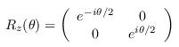
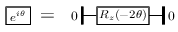
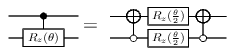
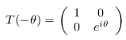
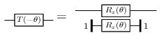

| Safe Haskell | None |
|---|
QuipperLib.Synthesis
Contents
Description
A Quipper library for synthesizing Clifford+T circuits directly from a matrix description or Euler angle description of a unitary operator. This library provides both exact and approximate synthesis.
- type Precision = Double
- bits :: Precision
- digits :: Precision
- type KeepPhase = Bool
- apply_gate_at :: Gate -> Qubit -> Circ ()
- apply_gates_at :: [Gate] -> Qubit -> Circ ()
- apply_gates2_at :: [Gate] -> Qubit -> Qubit -> Circ ()
- twolevel :: Index -> Index -> [Qubit] -> (Qubit -> Circ ()) -> Circ ()
- apply_twolevel_at :: TwoLevel -> [Qubit] -> Circ ()
- apply_twolevels_at :: [TwoLevel] -> [Qubit] -> Circ ()
- exact_synthesis1 :: ToGates a => a -> Qubit -> Circ Qubit
- exact_synthesis :: (ToEComplex a, Nat n) => Matrix n n a -> [Qubit] -> Circ [Qubit]
- approximate_synthesis_zrot :: RandomGen g => Precision -> SymReal -> g -> Qubit -> Circ Qubit
- approximate_synthesis_phase :: RandomGen g => KeepPhase -> Precision -> SymReal -> g -> Circ ()
- approximate_synthesis_euler :: RandomGen g => KeepPhase -> Precision -> (SymReal, SymReal, SymReal, SymReal) -> g -> Qubit -> Circ Qubit
- approximate_synthesis_u2 :: RandomGen g => KeepPhase -> Precision -> U2 (Cplx SymReal) -> g -> Qubit -> Circ Qubit
- approximate_synthesis_zrot_ctrl :: RandomGen g => Precision -> SymReal -> g -> Qubit -> Qubit -> Circ Qubit
- approximate_synthesis_phase_ctrl :: RandomGen g => KeepPhase -> Precision -> SymReal -> g -> Qubit -> Circ Qubit
Precision
A type to measure precision. Precision is expressed as a number b of bits, i.e., binary digits, so that ε = 2−b.
Binary digits, as a unit of precision. For example, the following specifies a precision of 20 binary digits:
prec = 20 * bits
Decimal digits, as a unit of precision. For example, the following specifies a precision of 30 decimal digits:
prec = 30 * digits
Phase
Auxiliary functions
apply_gate_at :: Gate -> Qubit -> Circ ()Source
apply_gates_at :: [Gate] -> Qubit -> Circ ()Source
apply_gates2_at :: [Gate] -> Qubit -> Qubit -> Circ ()Source
Like apply_gates_at, but apply the same list of gates to two
qubits in parallel.
twolevel :: Index -> Index -> [Qubit] -> (Qubit -> Circ ()) -> Circ ()Source
Input two indices i and j, a list of qubits qlist, and an imperative-style single-qubit gate U. Apply the two-level operator Ui,j to qlist. Intended usage:
twolevel i j qlist gate_U_at
The qubits in qlist are ordered lexicographically left-to-right, e.g., [|00〉, |01〉, |10〉, |11〉].
This function implements an improved version of Gray codes.
apply_twolevel_at :: TwoLevel -> [Qubit] -> Circ ()Source
Apply a TwoLevel gate to the given list of qubits.
The qubits in qlist are ordered lexicographically left-to-right,
e.g., [|00〉, |01〉, |10〉, |11〉].
apply_twolevels_at :: [TwoLevel] -> [Qubit] -> Circ ()Source
Apply a list of TwoLevel gates to the given list of
qubits.
The qubits in qlist are ordered lexicographically left-to-right, e.g., [|00〉, |01〉, |10〉, |11〉].
Note: the operators in the list are applied right-to-left, i.e., the gate list is assumed given in matrix multiplication order, but are applied in circuit order.
Single-qubit exact synthesis
exact_synthesis1 :: ToGates a => a -> Qubit -> Circ QubitSource
Decompose the given operator exactly into a single-qubit
Clifford+T circuit. The operator must be given in one of the
available exact formats, i.e., any instance of the ToGates class.
Typical instances are:
-
U2DComplex: a 2×2 unitary operator with entries from the ring ℤ[1/√2, i]; -
U2DOmega: a 2×2 unitary operator with entries from the ring D[ω]; -
SO3DReal: a 3×3 Bloch sphere operator with entries from the ring ℤ[1/√2]. In this last case, the operator will be synthesized up to an unspecified global phase.
Multi-qubit exact synthesis
exact_synthesis :: (ToEComplex a, Nat n) => Matrix n n a -> [Qubit] -> Circ [Qubit]Source
Decompose the given operator exactly into a Clifford+T circuit.
The operator must be given as an n×n-matrix with coefficients
in a ring that is an instance of the ToEComplex class. Typical
examples of such rings are DComplex, DOmega, and EComplex.
If this function is applied to a list of m qubits, then we must have n ≤ 2m.
The generated circuit may contain ancillas.
Single-qubit approximate synthesis
z-Rotations
approximate_synthesis_zrot :: RandomGen g => Precision -> SymReal -> g -> Qubit -> Circ QubitSource
Decompose an Rz(θ) = e−iθZ/2 gate into a single-qubit Clifford+T circuit up to the given precision.

The parameters are:
- a precision b ≥ 0;
- an angle θ, given as a
SymRealvalue; - a source of randomness g.
Global phase gates
approximate_synthesis_phase :: RandomGen g => KeepPhase -> Precision -> SymReal -> g -> Circ ()Source
Construct a Clifford+T circuit (with no inputs and outputs) that approximates a scalar global phase gate eiθ up to the given precision. The parameters are:
- a flag keepphase to indicate whether global phase should be
respected. (Note that if this is set to
False, then this function is just a no-op); - a precision b ≥ 0;
- an angle θ, given as a
SymRealvalue; - a source of randomness g.
We use the following decomposition:

U(2) from Euler angles
approximate_synthesis_euler :: RandomGen g => KeepPhase -> Precision -> (SymReal, SymReal, SymReal, SymReal) -> g -> Qubit -> Circ QubitSource
Decompose the operator
- U = eiα Rz(β) Rx(γ) Rz(δ)
into the Clifford+T gate base, up to the given precision. The parameters are:
U(2) from matrix
approximate_synthesis_u2 :: RandomGen g => KeepPhase -> Precision -> U2 (Cplx SymReal) -> g -> Qubit -> Circ QubitSource
Decompose a single-qubit unitary gate U into the Clifford+T gate base, up to the given precision, provided that det U = 1. The parameters are:
Controlled gates
approximate_synthesis_zrot_ctrl :: RandomGen g => Precision -> SymReal -> g -> Qubit -> Qubit -> Circ QubitSource
Decompose a controlled Rz(θ) = e−iθZ/2 gate
into a single-qubit Clifford+T circuit up to the given
precision. The parameters are as for approximate_synthesis_phase.
The first input is the target qubit, and the second input the
control.
We use the following decomposition. It has lower T-count than the alternatives and makes good use of parallelism. Since it uses the same rotation twice, only a single run of the synthesis algorithm is required.

approximate_synthesis_phase_ctrl :: RandomGen g => KeepPhase -> Precision -> SymReal -> g -> Qubit -> Circ QubitSource
Decompose a controlled phase gate

into the Clifford+T gate base. The parameters are as for
approximate_synthesis_phase.
We use the following decomposition. It has lower T-count than the alternatives and makes good use of parallelism. Since it uses the same rotation twice, only a single run of the synthesis algorithm is required.

If the KeepPhase flag is set, respect global phase; otherwise,
disregard it.